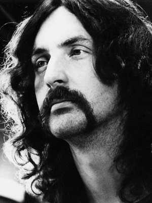

Nick Mason

Nicholas Berkeley "Nick" Mason (Birmingham, 27 de janeiro de 1944) é um baterista e compositor inglês, mais conhecido por ser o único integrante da formação original dos Pink Floyd - ele foi o único membro que não saiu desde a formação da banda em 1965. Apesar de escrever poucas músicas para o Pink Floyd, ele contribui com algumas das mais famosas músicas da banda, como "Interstellar Overdrive", "A Saucerful Of Secrets" e "Echoes". Ele também compete em eventos automobilísticos, como as 24 Horas de Le Mans. Ele foi o único membro do Pink Floyd a participar da gravação de todos os álbuns.